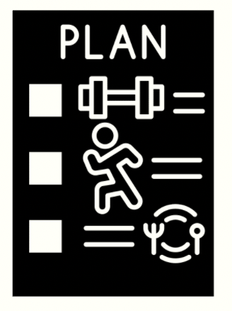

<
>

< learning plan >
What is your long term goal and/or career pathway?
My long term goal is to be a leader in the tech industry and focus on human centric technological infrastructures. I have many ideas I want to develop but also want to work in the industry and learn from experience. I would love to be a product developer, solutions architect and work in digital transformation.
When it comes to learning, my strengths and limitations play a vital role. I know that I am passionate, creative and hard-working, and I can use these to my advantage. When it comes to learning skills and mindsets that I can use in future to develop my career, I take the learning process very seriously and find myself becoming wrapped up in all the small technical details and making sure they are perfect instead of acknowledging the bigger picture and moving on to the next topic
I would say I have good skills when it comes to creating a healthy work-life balance, I understand how important it is to look after yourself during the creation/work process. Something I think I lack at the moment is confidence, I think this has stopped me in many areas, and I do not want to step back from anything due to this lack of confidence. It has me doubting my skills, intelligence and has been a barrier I want to diminish in my time at Dev Academy.
While I am at Dev Academy, I would love to develop on a few different skills. One is being able to communicate clearly and authentically. I often put others before myself and often am at the pitfall of this. I would love to learn soft skills that allow me to communicate more effectively.
One of my biggest values is honouring my commitments. I find time management to be one of the most important skills to have and this translates into many areas of my life. I will hold myself accountable to make sure I complete all work in a timely manner and if I struggle I will talk to my cohort members and facilitator and share with them my current struggle in hopes they can offer advice. One of my goals in this bootcamp is to have physical indicators of my organisation e.g. Toggl, diary etc.
When things are building up and starting to get to me I will do a quick analysis of what needs to be done, what I think I will struggle with and create a timebox myself so I can organise my time so it doesn’t seem so daunting. I will also take a break and spend that time doing something that I love e.g. walk, phone a friend. During my time at Dev, I have made sure to continue my hobbies and to take time for myself and wellbeing.
As previously stated before each task, I will do an analysis and look for potential areas where I will need help. Before I start this task, I will let me facilitator know that they might get a message from me asking for help. What I expect from the facilitation team is just to have a positive attitude towards us student developers and to have patience when we are stuck.
There will not be any block-out periods during my bootcamp. I have schedule my time around Dev Academy. If anything comes up, I will be in communication with the facilitation team.